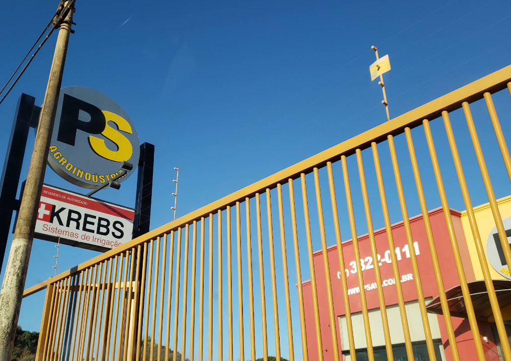
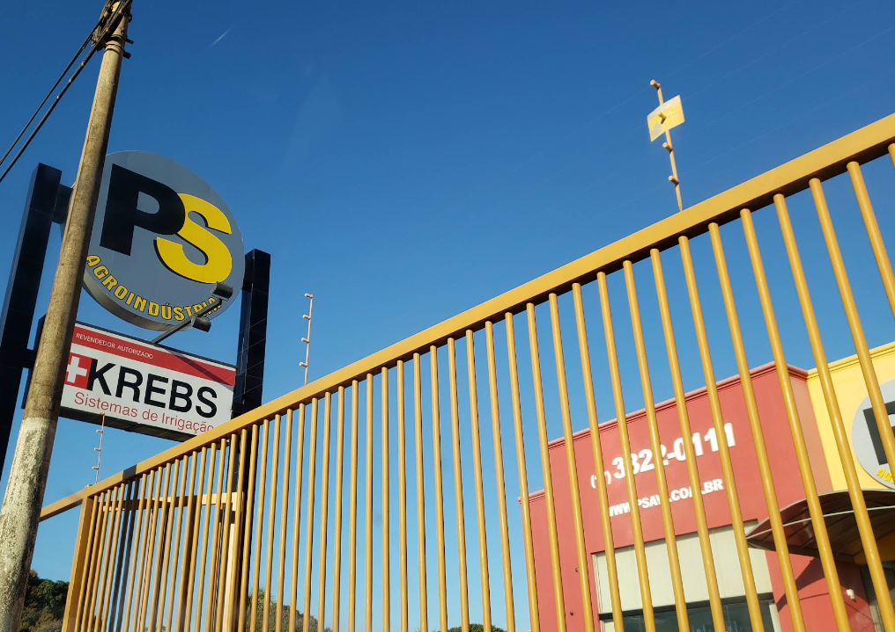

ps avi
2026

A PS AVI, foi fundada no ano de 1.996, inicialmente com sede na Avenida Engº Necker C. de Camargo nº 1837 na cidade de Barretos-SP, onde posteriormente no ano de 2.011 procurando melhor atender seus clientes, transferiu-se para sua nova "Loja" na Rodovia Brigadeiro Faria Lima, km 425+300 metros nesta cidade.
Sempre trabalhando e representando as principais marcas do mercado no segmento de "Irrigação", a PS AVI busca sempre proporcionar um bom atendimento a seus clientes proporcionando satisfação e conquistando a confiança dos mesmos.
Possui em seu quadro de técnicos e colaboradores, profissionais altamente capacitados para atender uma extensa gama de clientes, oferecendo sempre as melhores opções em projetos de Irrigação, montagens e Assistência Técnica em geral em Pivôs, Carretéis de Irrigação, Irrigação Localizada e Irrigação automatizada para jardins e campos de futebol, entre outros.
A PS AVI , orgulha-se por participar do crescimento do Agro Negocio Brasileiro, e fazer parte do sucesso da produção agrícola, levando Irrigação para produção de alimentos, biocombustível e pastagem, objetivando também o sucesso e o crescimento do PRODUTOR RURAL.
 
.png)
.png)
Contamos atualmente com três polos centrais de atendimento para melhor servir você e sua propriedade. Com isso, formamos o Grupo PS Irrigação:
PS Barretos
Localizada na cidade de Barretos (SP), esta unidade serve como matriz e base de operações, garantindo acesso às linhas completas de produtos e serviços, bem como suporte técnico especializado.
PS Guaíra
Situada em Guaíra (SP), esta filial reforça nossa presença no oeste paulista, oferecendo atendimento local ágil, peças, assistência técnica e montagem para projetos de irrigação.
PS Minas
Com unidade em Minas Gerais, esta operação amplia o alcance do Grupo PS Irrigação no Sudeste, levando tecnologia, serviços e soluções de irrigação sustentável aos produtores da região.
.png)